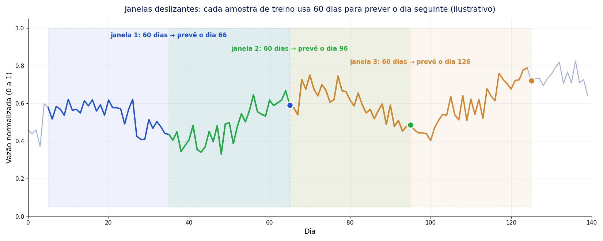
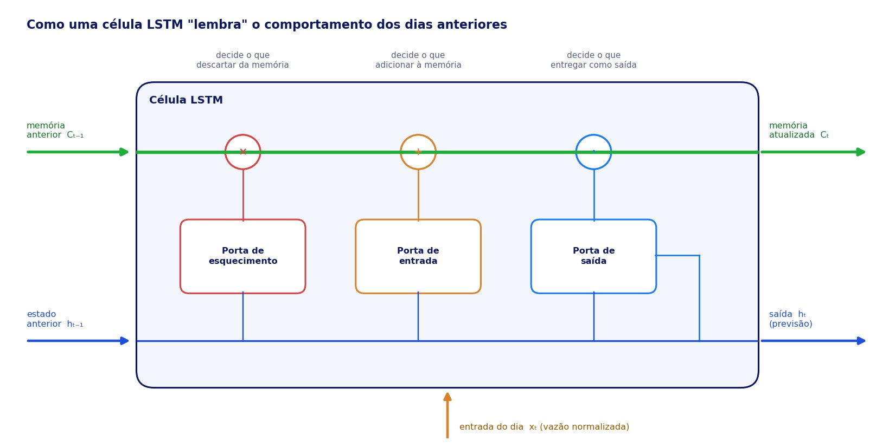
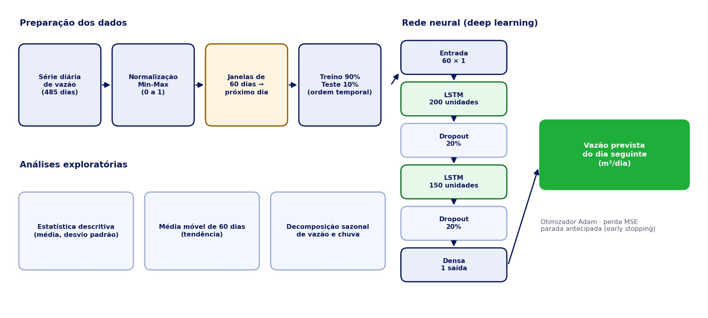
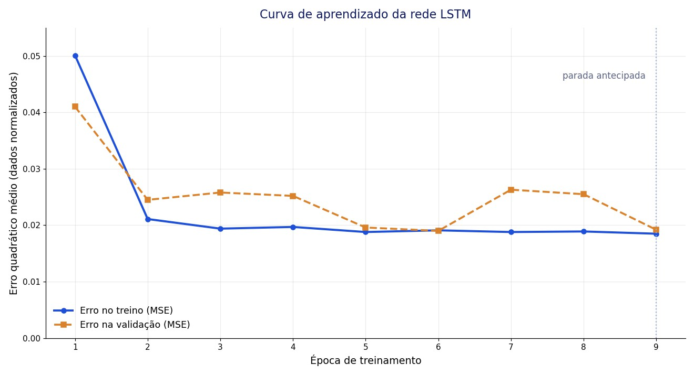
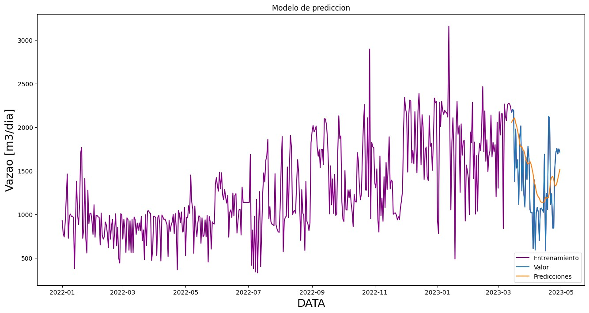

Problema / desafio do cliente
A vazão de chorume que chega a uma estação de tratamento varia muito de um dia para o outro, em função das chuvas, da idade das células do aterro e da operação. Sem antecipar essa vazão, fica difícil dimensionar a capacidade de tratamento, planejar a operação e se preparar para picos.
O objetivo foi usar inteligência artificial, mais especificamente deep learning, para aprender o comportamento histórico da vazão e prever a geração diária de chorume a partir dos dados ambientais do aterro.
Contexto e características do processo
- Aterro sanitário no sul do Brasil, que recebe cerca de 5.000 toneladas de resíduos por dia, distribuídas em duas células principais.
- Geração de chorume da ordem de 30 m³/h na estação seca e 60 m³/h na estação chuvosa (720 a 1.440 m³/dia).
- Chorume composto por uma mistura de "chorume velho", das células antigas, e "chorume novo", das células recentes, com sólidos suspensos, DBO, DQO recalcitrante, nitrogênio amoniacal e sais dissolvidos.
- Base de dados com 485 dias de registros diários de vazão e pluviometria, de janeiro de 2022 a abril de 2023.
Diagnóstico e dados analisados
- Vazão média de cerca de 1.285 m³/dia, com desvio padrão de cerca de 508 m³/dia (coeficiente de variação próximo de 40%): uma série muito irregular, difícil de prever com regras simples.
- A média móvel de 60 dias e a decomposição sazonal mostraram uma tendência de crescimento da vazão ao longo do período, informação importante para planejar a capacidade da estação.
- As chuvas têm forte componente sazonal e picos que se refletem na vazão de chorume com algum atraso, o que favorece modelos capazes de "lembrar" o passado recente.
Metodologia utilizada
- Análise exploratória: estatística descritiva, média móvel de 60 dias e decomposição sazonal aditiva (tendência, sazonalidade e resíduo) da vazão e da chuva.
- Normalização da vazão entre 0 e 1 (Min-Max), para estabilizar o treinamento da rede.
- Janelas deslizantes: cada exemplo de treino usa os 60 dias anteriores como entrada e a vazão do dia seguinte como alvo.
- Divisão temporal dos dados: 90% iniciais para treino e 10% finais para teste, sem embaralhar, para simular uma previsão real do futuro.
- Treinamento da rede LSTM com otimizador Adam, perda por erro quadrático médio (MSE), 10% do treino reservado para validação e parada antecipada.
- Avaliação no período de teste, com os valores previstos convertidos de volta para m³/dia e cálculo do coeficiente de determinação (R²).

Solução de engenharia desenvolvida
Por que uma rede LSTM? Redes neurais recorrentes processam os dados em sequência, mas as versões simples "esquecem" rapidamente o que aconteceu muitos passos atrás. A LSTM (Long Short-Term Memory) resolve isso com uma memória interna controlada por três portas:
- Porta de esquecimento: decide que parte da memória deve ser descartada;
- Porta de entrada: decide que informação do dia atual deve ser incorporada;
- Porta de saída: decide o que a célula entrega como resultado para a próxima camada.
Assim, a rede consegue relacionar a vazão de hoje com padrões de semanas anteriores, algo essencial em séries ambientais com sazonalidade e efeitos acumulados de chuva.

Arquitetura adotada: duas camadas LSTM empilhadas (200 e 150 unidades), cada uma seguida de dropout de 20% para reduzir o sobreajuste, e uma camada densa com uma saída, que é a vazão prevista do dia seguinte.

| Hiperparâmetro | Valor |
|---|---|
| Janela de entrada | 60 dias |
| Camadas LSTM | 2 (200 e 150 unidades) |
| Dropout | 20% após cada camada LSTM |
| Saída | 1 neurônio (vazão do dia seguinte) |
| Otimizador e perda | Adam · erro quadrático médio (MSE) |
| Treinamento | até 100 épocas, com parada antecipada (paciência de 3 épocas) |
| Divisão dos dados | 90% treino (10% dele para validação) · 10% teste |
Tecnologias e processos envolvidos
- Deep learning com redes neurais recorrentes LSTM (TensorFlow/Keras).
- Python para ciência de dados: pandas, NumPy, scikit-learn (normalização e métricas) e statsmodels (decomposição sazonal).
- Análise de séries temporais: médias móveis, decomposição sazonal e validação temporal.
- Notebook Jupyter com o fluxo completo, publicado no GitHub.
A mesma abordagem pode ser aplicada a outras variáveis ambientais, como a qualidade do efluente, as emissões, o consumo de reagentes ou a demanda de energia de uma estação de tratamento.
Modelagem, simulação e ferramentas computacionais
Treinamento. O erro caiu rapidamente nas primeiras épocas e estabilizou. A parada antecipada interrompeu o treinamento na 9ª época, quando o erro de validação deixou de melhorar, evitando que a rede "decorasse" os dados de treino.

Previsão. No período de teste, a rede reproduziu o nível e a tendência da vazão, mas suavizou os picos de um dia para o outro.

Resultados obtidos
- A rede LSTM aprendeu o nível e a tendência da vazão de chorume e gerou previsões coerentes para o período de teste.
- As oscilações bruscas de um dia para o outro não foram capturadas (R² de cerca de 0,11 no teste), o que é esperado para um modelo que usa apenas a vazão histórica: os picos diários dependem principalmente das chuvas.
- O estudo funciona como prova de conceito e mostra o caminho para modelos mais precisos.
Próximos passos para aumentar a precisão:
- modelo multivariado, incluindo a pluviometria (com defasagens) e variáveis operacionais como entradas;
- prever médias semanais, mais estáveis e úteis para o planejamento;
- comparar com outras arquiteturas (GRU, CNN-LSTM, modelos com mecanismo de atenção) e com modelos clássicos como SARIMA;
- ajustar hiperparâmetros com validação cruzada temporal e usar métricas como MAE e RMSE;
- estimar a incerteza das previsões, por exemplo com ensembles de redes.
CAPEX/OPEX e análise técnico-econômica
Quando aplicável: estimativas de CAPEX e OPEX, comparação entre alternativas, custo por m³ ou por tonelada, payback.
Escopo e responsabilidades da GETA
A GETA foi responsável por todo o estudo:
- organização e tratamento da base de dados de vazão e pluviometria;
- análise estatística e de séries temporais;
- desenvolvimento, treinamento e avaliação do modelo de deep learning;
- interpretação dos resultados e definição dos próximos passos.
Principais entregáveis
- Notebook Jupyter com o fluxo completo de análise e previsão (repositório público no GitHub).
- Análise de tendências de vazão e de chuvas, com médias móveis e decomposição sazonal.
- Modelo LSTM de previsão diária da vazão de chorume, com curva de aprendizado e avaliação.
- Recomendações para evoluir o modelo para uma versão multivariada.